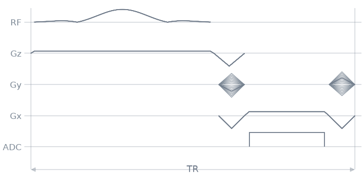
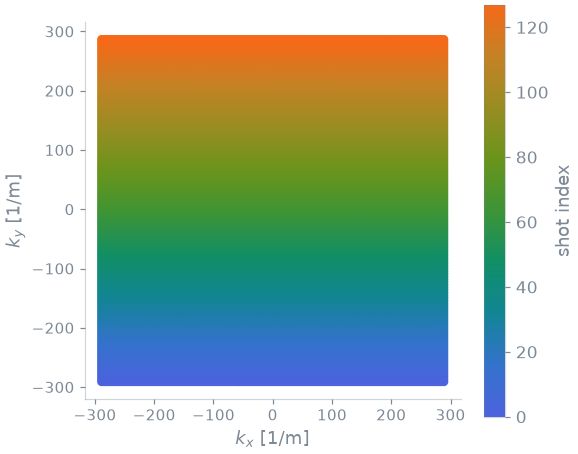

Note
Go to the end to download the full example code.
A sequence function#
The previous lesson,
Sequence modules, designed an
excitation and a readout with modules. This lesson assembles them into a
complete acquisition. A sequence function
takes the system limits and a protocol: it designs the modules, plays one
repetition per line of k-space and returns the sequence. The function records
the encoding labels with Labels.
parameters() reads its protocol, and
write() writes the sequence it returns.
The sequence is the RF-spoiled slice-selective gradient echo of
Spoiling, expressed as a sequence
function rather than as a loop over events. Each sequence in Sequence catalogue is
such a function, in its own module of pypulseqpp.sequences. The structure is
described in Sequence design in pypulseqpp.
Learning objectives#
After this lesson, you should be able to:
state what a sequence function designs before its loop, plays in the loop and records after it;
write a function of the system limits and a protocol of keyword parameters that designs and plays a sequence, recording its encoding indices with
Labels;read the acquisition order back from the
LINlabels of the sequence;read the protocol of a sequence function with
parameters(), derive its command-line options from the same signature, and write what it returns withwrite().
Sequence function#
system is the first parameter and the keyword parameters after it are the
protocol. Before the loop, the function lowers the limits of system to the
gradient and slew limits it is designed for with
cap_system(), which never raises a limit, and designs the
excitation and readout modules; the readout module solves the echo and
repetition times that are None. The loop plays one repetition per line of
k-space. A label keeps its value until an event changes it, so
Labels returns only the LIN events a block
needs. After the loop, the geometry a reconstruction reads is recorded as
definitions and the function returns the sequence.
import numpy as np
import pypulseqpp as pp
import pypulseqpp.sequences as design
def spoiled_gradient_echo(
system: pp.Opts,
*,
fov: float = 220e-3,
matrix: int = 128,
slice_thickness: float = 5e-3,
flip_angle_deg: float = 12.0,
te: float | None = None,
tr: float | None = None,
) -> pp.Sequence:
"""RF-spoiled 2D Cartesian gradient echo, one line per repetition.
Parameters
----------
fov : float, default=0.22
Isotropic field of view (m).
matrix : int, default=128
Matrix size along both encoded axes.
slice_thickness : float, default=0.005
Slice thickness (m).
flip_angle_deg : float, default=12.0
Excitation flip angle (degrees).
te : float | None, default=None
Echo time (s). ``None`` is as short as the readout admits.
tr : float | None, default=None
Repetition time (s). ``None`` is as short as possible.
"""
system = pp.cap_system(system, max_grad=40.0, max_slew=150.0)
excitation = design.SpatialSelectiveExcitation(
system,
flip_angle_deg=flip_angle_deg,
thickness_m=slice_thickness,
duration_s=3e-3,
)
readout = design.LineReadout2D(
system,
excitation.rf,
excitation.gz,
excitation.gz_reph,
fov=(fov, fov),
matrix=(matrix, matrix),
te=te,
tr=tr,
)
# Quadratic RF spoiling: the phase increment grows by 117 degrees per
# repetition.
phases = np.deg2rad(117.0) * np.cumsum(np.arange(matrix))
seq, labels = pp.Sequence(system), design.Labels()
for line in range(matrix):
phase = phases[line] % (2 * np.pi)
readout.rf.phase_offset = readout.adc.phase_offset = phase
step = (line - matrix // 2) / (matrix / 2)
seq.add_block(readout.rf, readout.gz, *labels(LIN=line))
seq.add_block(
readout.gx_pre, pp.scale_grad(readout.gy_pre, step), readout.gz_reph
)
seq.add_block(readout.gx, readout.adc)
seq.add_block(readout.gx_spoil, pp.scale_grad(readout.gy_rew, step))
if getattr(readout, "wait_tr", None) is not None:
seq.add_block(readout.wait_tr)
seq.set_definition("FOV", [fov, fov, slice_thickness])
seq.set_definition("Matrix", [matrix, matrix, 1])
seq.set_definition("Name", "tour_gre_2d")
return seq
Sequence construction#
Calling the function designs the whole scan. The system is the default
Opts, whose limits the function lowers to at most
40 mT/m and 150 T/m/s.
seq = spoiled_gradient_echo(pp.Opts(), matrix=128)
print(f"{seq.num_blocks} blocks, {seq.duration()[0]:.2f} s")
print("timing:", seq.check_timing()[0])
print("definitions:", sorted(seq.definitions))
512 blocks, 0.71 s
timing: True
definitions: ['FOV', 'Matrix', 'Name', 'TotalDuration']
Sequence diagram#
seq.paper_plot(tr=32)

Acquisition order#
The first change of a label is a SET, a change that repeats the previous change is an INC, and an unchanged value writes no event.
LIN=0: [('labelset', 0)]
LIN=1: [('labelset', 1)]
LIN=2: [('labelinc', 1)]
LIN=3: [('labelinc', 1)]
LIN=3: []
Every acquisition of the sequence carries its LIN label, so the order the
loop played is read back from the sequence rather than reconstructed.
pp.plot.plot_kspace(seq, color_by="order", plane="xy", show_trajectory=False)

Protocol#
The type and default of a protocol parameter are read from the signature, and
its unit from the first parenthesised group of its description in the
Parameters section. A protocol editor reads this record, and the command
line derives its options from the same signature and Parameters section.
for name, parameter in design.parameters(spoiled_gradient_echo).items():
print(
f"{name:16}{parameter.type.__name__:7}{parameter.unit:9}"
f"default {parameter.default}"
)
fov float m default 0.22
matrix int default 128
slice_thickness float m default 0.005
flip_angle_deg float degrees default 12.0
te float s default None
tr float s default None
Command-line interface#
pypulseqpp.cli.run() derives one option from each keyword parameter,
with the help text from the Parameters section, builds system from
the limit options and writes the result with
write(). A script that ends with
if __name__ == "__main__":
raise SystemExit(cli.run(spoiled_gradient_echo, sys.argv[1:]))
is run as python gre.py --matrix 64 --te 5e-3 -o gre.seq. A function that
returns a list of sequences is written as a chain of files, each naming the
next with NextSequence.
['tour_gre_2d.seq']
Total running time of the script: (0 minutes 0.488 seconds)